Алгоритмы и прочие проблемы современного найма программистов
Денис Аникин, https://xfenix.ruКто я

- Техлид в AI Platform в Райфе
- Лидер корп. Python Community
- Python, typescript, kubernetes, архитектура
- Выступаю, работаю в ПК
О чём будем говорить
- Наём программистов
- Этапы
- Где процесс проклят
- Ну и конечно…

Разгоны про алгоритмы
Толчём воду в ступе!
- Алгоритмы на собесах = проверка алгосов на собесах
- Не помогают с «хорошими»
- Отсеивают тех, кто не любит лайвкодинг
- Не обоснованы никак


Фактология
- Доказательств в пользу алгоритмов нет
- Что такое «алгоритмы»?
- Отсеивают тех, кто не любит лайвкодинг
- Не обоснованы никак
«часто валю сеньоров со стажем
в 15-20 лет» ©
Задачи найма
- Быстро
- Дешево
- Найти
- Человека
Алгоритмы это же база!!!
- Кто сказал?
- Доказательства?
- «Я так скозал» не принимаем сегодня к оплате
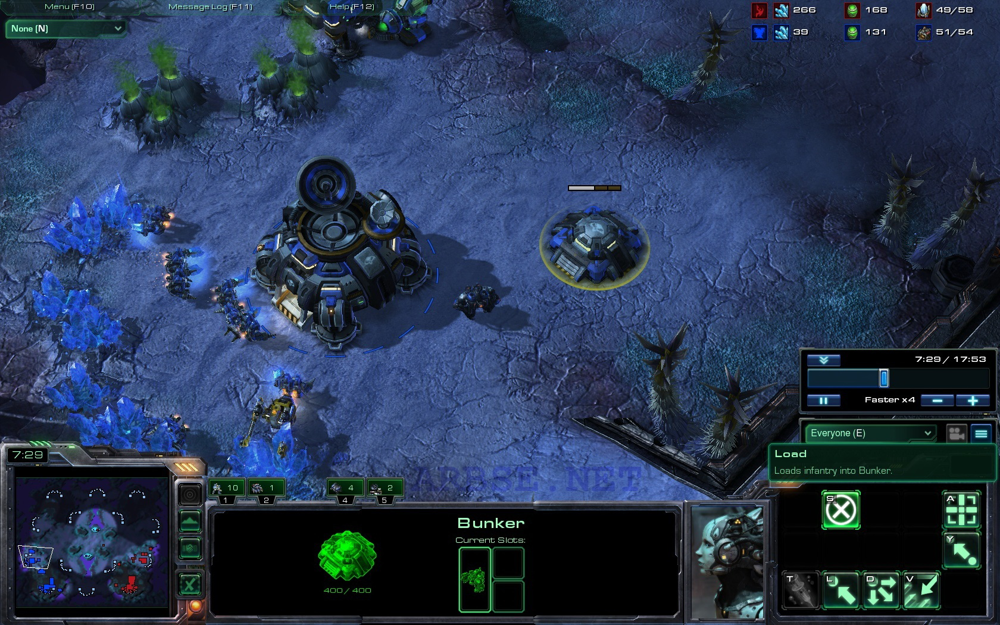
✨✨✨

💅💅💅
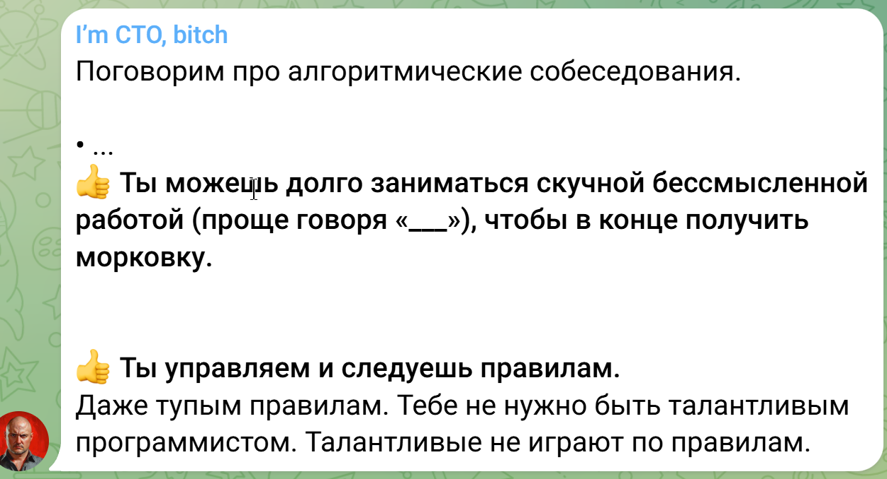
Есть пара мыслей
- Управляемость и тупая работа == кандидаты на заменяемость LLM
- Следование правилам проверять легко
- Предложите правила…
- …если человек им следует, то…
Туда же
- Проверка как человек мыслит
- Проверка «лояльности»
- Прочие «проверки»
Неожиданная мысль —
попробуйте прямой путь,
а не кривой

Да это же… адепты резни ❤️❤️❤️
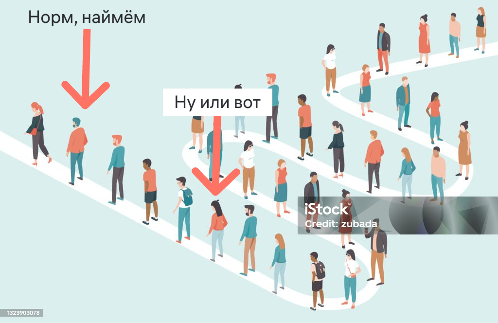
Найм
- Это не отсев!!!
- Подходящий кандидат
- Первый хороший
- Задача о разборчивой невесте
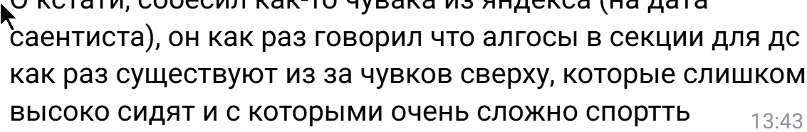

Не надо. Собесы не имеют самоценности!!!
Уф
- Хорошо, когда ты миллионер и деньги тебе не требуются! Почтение!
- Неписанные и нечеткие правила
- А мы их заранее libastral’ом!
Сроки и экзамены!
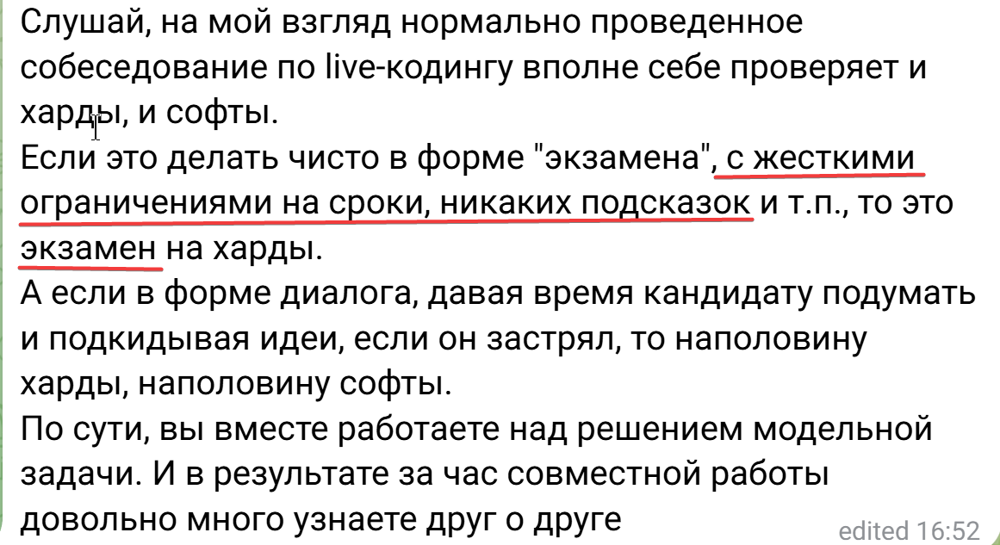
Взрослые люди ищут работу, чтобы жить и приносить пользу


Ещё одно золото
- Алгоритмы и структуры — плохой заезженный мем
- Алгоритмы не живут отдельно
- Спросите чатботов
Разносим по фактам
Алгоритмы
Важно
- Надо аргументированно накинуть
- Нельзя доказать отсутствие чего-либо
- «Чайник Рассела»
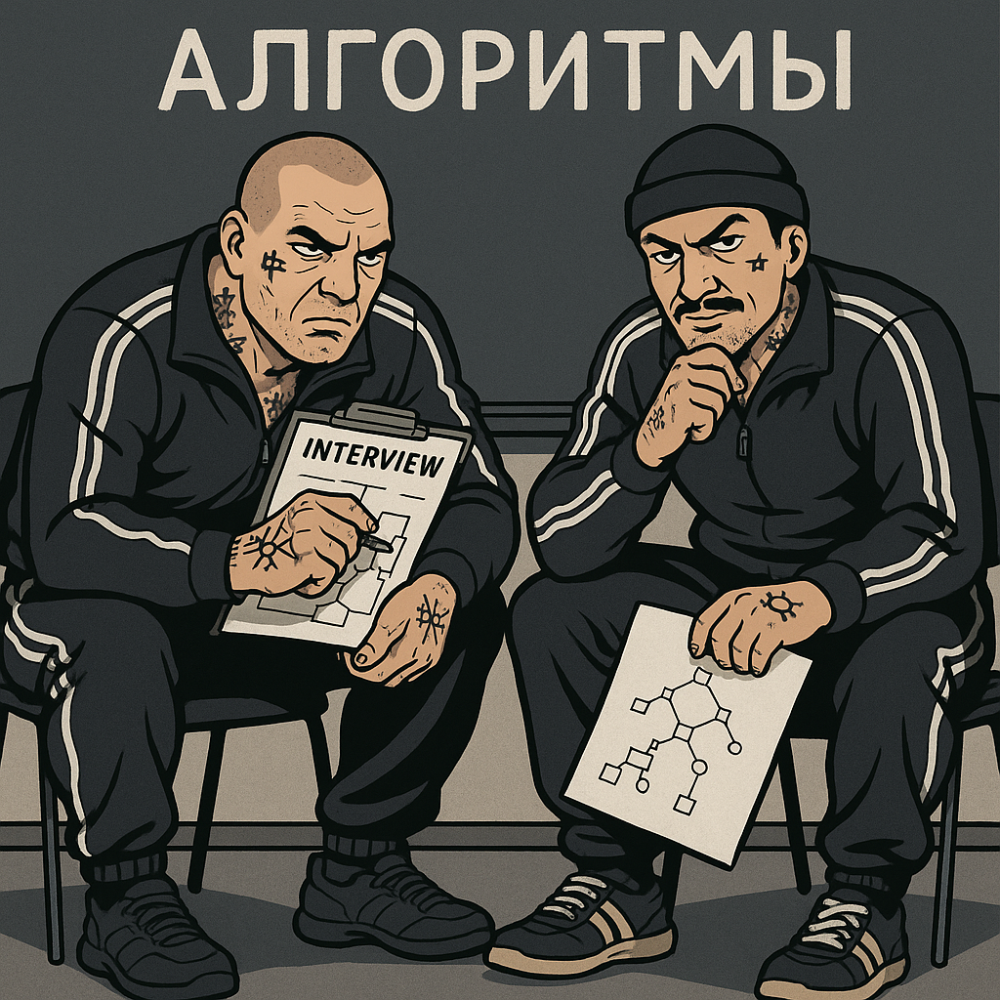
Наблюдения
- ОПГ становятся жестче
- «Они слишком хорошо решают, надо сложнее»
- Мемные гугловые рекрутеры
| Метод | Считают хорошим предиктором успеха | Планируют чаще использовать |
|---|---|---|
| GitHub-профиль | 78% | 83% |
| Проектное задание | 71% | 68% |
| Обсуждение опыта | 64% | 59% |
| Парное … | 58% | 62% |
| Алгоритмическое интервью | 34% | 18% |
| Резюме | 21% | 12% |
Так что с алгоритмами не так-то???
Да всё просто
- Нет коррелляции с работой
- Bias подготовки
- Неестественное окружение
- Стресс
«Неудачники нам не нужны?»
Адепты резни радуются
- Исследование — 61,5% проваливают live coding
- Большая часть кандидатов мимо
- Много хороших мимо
Мы поймем как человек мыслит
Ученые не поняли, а вы смогли?
Мы поймем его мотивацию
Человек мотивирован получать деньги✨✨✨
«We’ve been relying on a fundamentally flawed belief that algorithmic puzzle-solving under pressure predicts job performance.Aline Lerner, Co-founder of interviewing.io
The data simply doesn’t support this»
Должен быть устойчив к стрессу!
Фу, фу, менджмент чекните
«Многие нейросети пишут алгоритмы лучше программистов»Автор: я
Алгоритмы учат думать
- Ненаучно, нет доказательств
- Шахматы учат думать. Будем их давать?
- LLM «думают». Их нанимаем?
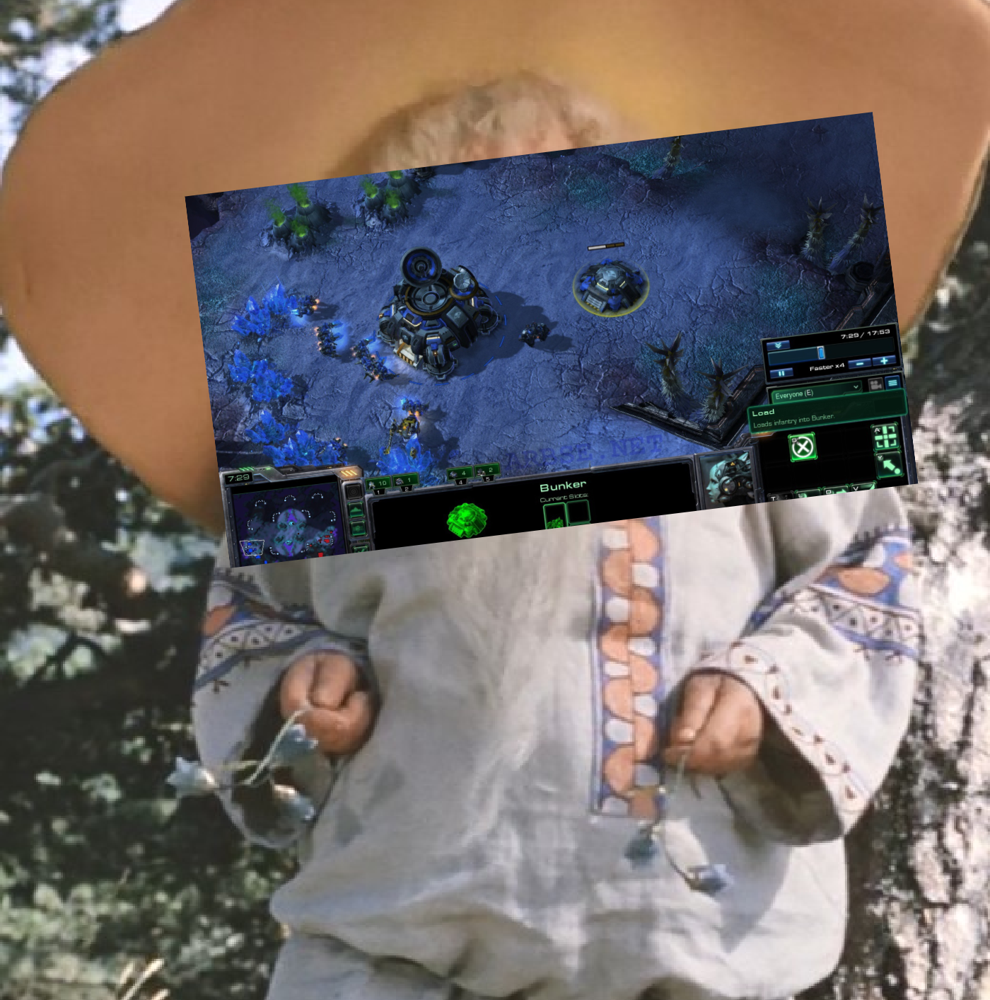
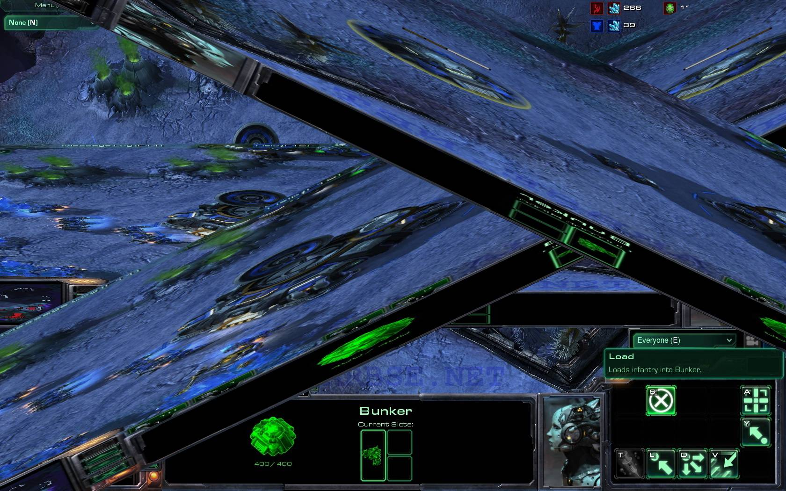
Это база!
- Самый-самый любимый аргумент!
- Это удар, нам нечем ответить
- Всё так. Это база
«Это база»?
- Алгоритмов известных >1000, популярных >200
- «Алгоритмы и структуры данных» только вместе
- Что это такое 🤷♂️
- Зачем это 🤷♂️🤷♂️
Масштабирование
- ТЫ НЕ ПОНИМАЕШЬ
- Масштабирование
- Джуны собесят сеньоров
- Масштаб как у ГУГОЛ
Тестовые задания
Проблемы и тут
- Всё плохо
- Затраты времени для всех
- Маленькое — AI, большое — бесплатная работа
- Очень субъективно, плохая ОС
System design
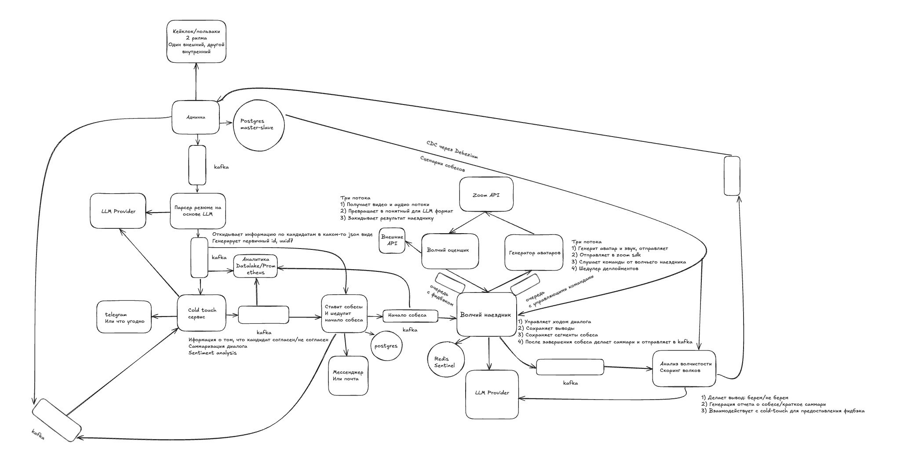
Ну кайф! Все любят же?
4:19
Тут великолепно всё
- Нереальные сроки
- «Рулетка»
- Тайный клуб system design primer
- Давление
- «Говори пока доска не заполнится»
Теория красных флагов
Проблемы
- «Зумеры придумали предрассудки»
- Метод скоринга из дейтингов? (выше 180 см)
- Один или несколько признаков — ничего не говорят
- Человек — комплексное понятие
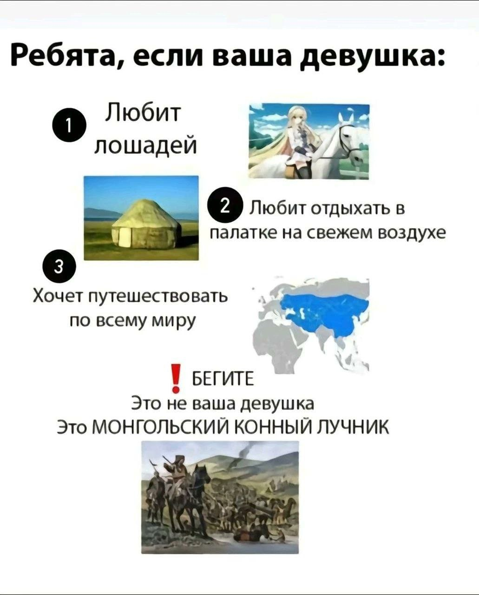
Почему так?
Потому, что
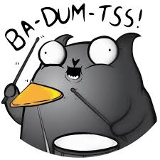
Более того — вы обязаны ошибаться
«Мы не так рассуждаем»,
«Вам легко говорить»
Чужой опыт
- Долго сидишь?
- Надумываешь, дуешь на воду
- Пристаешь к ерунде
Грех оценки
- Программисты хотят друг друга оценивать
- Кто вы, чтобы давать оценку?
- Базы не знает!
- КАК МОЖНО ЭТОГО НЕ ЗНАТЬ???
- Высокомерие + обесценивание
- Игнор ОС
Восприятие людей
- Человек сложнее набора характеристик
- Нужен комплексный взгляд
- Из винтиков человека не собрать
Патчим ситуацию
Общие соображения
- Структура интервью помогает
- Групповые интервью — плохо
- Прямые методы
- ОС важна
- Ошибки — это ок
В пору «AI» пора думать о проверке знания AI инструментов
Заканчиваем
Прогнозы
- В 23 году я говорил — больше алгоритмов
- Что-то изменилось?
- Что будет?
Итоги
- Если вы слышите меня — вы и есть сопротивление
- Вы настоящее и будущее индустрии
- Не создавайте алгоритмические собеседования
- Не соглашайтесь на алгоритмы, если можете
- Я здесь ради вас, холивары мне не интересны